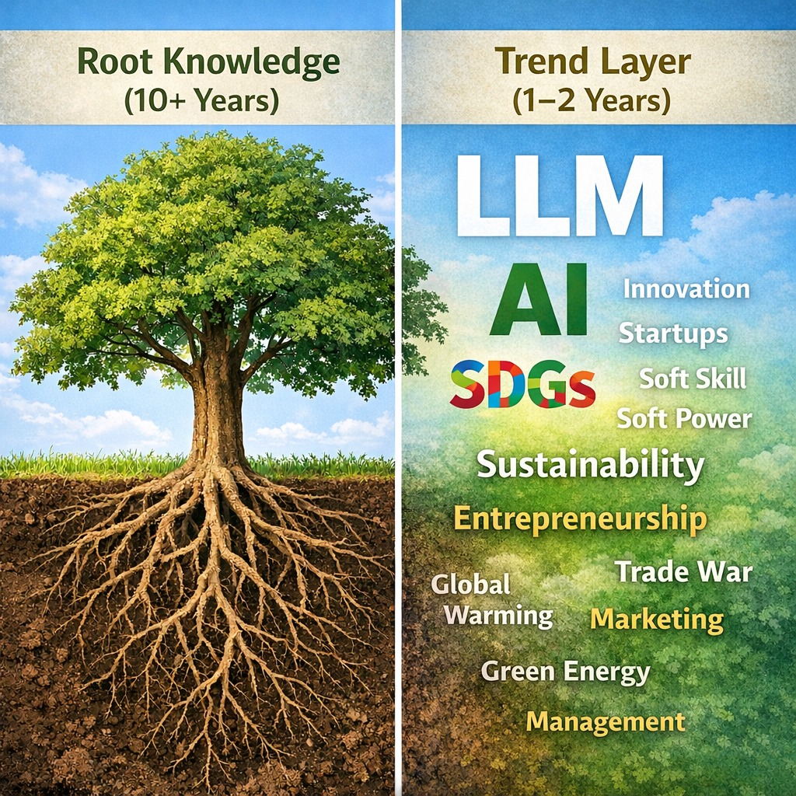

ในยุค LLM หลักสูตรต้องสอนการออกแบบระบบ ไม่ใช่แค่ทักษะที่ AI ทำแทนได้
{kind=link}

เมื่อ LLM ทำให้การเขียนโค้ดและการเข้าถึงความรู้ไม่ใช่ทักษะหายากเหมือนเดิม คำถามของหลักสูตรก็เปลี่ยนไปทันที สิ่งที่มหาวิทยาลัยต้องถามไม่ใช่เพียงว่าจะเพิ่มวิชาอะไร แต่คือโลกของแต่ละสาขากำลังเปลี่ยนเป็นอะไร และอีก 5-10 ปี คนในสาขานั้นต้องทำงานแบบไหน
ประเด็นนี้ไม่ได้จำกัดอยู่ที่วิศวกรรมคอมพิวเตอร์ แม้จุดเริ่มต้นจะมาจากการคิดเรื่องวิชา programming และการผลักรายวิชาอย่าง Applied AI for Engineering แต่โจทย์จริงของ LLM คือมันกำลัง redefine ว่าอะไรคือความรู้ที่มีค่า ในแทบทุกสาขา ตั้งแต่งานเกษตร การผลิต การควบคุมคุณภาพ ไปจนถึงการตัดสินใจในระบบขนาดใหญ่
ถ้ามองผ่านตัวอย่างของเกษตร จะเห็น pattern เดียวกันชัดมาก งานที่เคยอาศัยประสบการณ์ล้วน ๆ กำลังเปลี่ยนไปสู่การตัดสินใจด้วยข้อมูล, sensor, และ AI ฟาร์มไม่ได้ให้อาหารสัตว์ตามความรู้สึก แต่ใช้ model ช่วย optimize; การให้น้ำและใส่ปุ๋ยไม่ได้อิงสูตรตายตัว แต่ปรับตามสภาพจริงแบบ real-time; การผลิตอาหารไม่ได้ตรวจคุณภาพตอนปลายน้ำอย่างเดียว แต่ควบคุมและ trace ได้ทั้ง value chain
เมื่อ AI เข้ามา สิ่งที่มีค่าจริงไม่ใช่การทำตามขั้นตอน แต่คือการมองทั้งระบบ
สิ่งที่เปลี่ยนจริงจึงไม่ใช่แค่การมีเครื่องมือใหม่ แต่คือบทบาทของคนในระบบ จากเดิมที่เน้นทำตามขั้นตอน ไปสู่การต้องเข้าใจ logic ของระบบ, อ่านความสัมพันธ์ของข้อมูล, และตัดสินใจเชิงระบบได้ เพราะถ้าไม่เข้าใจว่าระบบทำงานอย่างไร คนก็จะเหลือบทบาทเพียง operator ที่กดใช้เครื่องมือซึ่งคนอื่นออกแบบไว้แล้ว
นี่ทำให้คุณค่าของบัณฑิตเปลี่ยนจากการมีความรู้แยกเป็นรายวิชา ไปสู่ความสามารถในการ ออกแบบ + ตัดสินใจ + คุมระบบ งานที่สร้าง value สูงขึ้นเรื่อย ๆ ไม่ใช่งาน routine ที่ AI ทำแทนได้ แต่คือการออกแบบ architecture ของระบบ การตีความข้อมูล การตั้งคำถามกับ model และการเชื่อมความรู้ domain เข้ากับ AI อย่างแยกไม่ออก
หลักสูตรจึงต้องเริ่มจากการตั้งสมมติฐานใหม่ว่าโลกของสาขากำลังจะเป็นอะไร
ถ้าคำถามจริงคือโลกของสาขานั้นกำลังเปลี่ยนเป็นอะไร หลักสูตรก็ไม่ควรเริ่มจากการถามว่าจะสอนอะไรเพิ่ม แต่ควรเริ่มจากการตั้งสมมติฐานของอนาคตการทำงานให้ชัดก่อน ว่าคนในสาขานั้นจะต้องอ่านข้อมูลแบบไหน ตัดสินใจแบบไหน ทำงานกับ AI แบบไหน และรับผิดชอบระบบในระดับใด
เมื่อเห็นแบบนี้ การสอนแบบแยกวิชา เน้นเนื้อหา และวัดผลด้วยข้อสอบเพียงอย่างเดียวก็ยิ่งตอบโจทย์น้อยลง เพราะโลกไม่ได้ต้องการคนที่เพียง รู้ แต่ต้องการคนที่ ใช้ความรู้เพื่อออกแบบและควบคุมระบบจริง ได้ภายใต้บริบทที่เปลี่ยนเร็ว
AI ไม่ควรเป็นแค่วิชาเพิ่ม แต่ต้องกลายเป็น environment ของการเรียนรู้ทั้งหมด
ถ้าพูดอย่างตรงไปตรงมา หลักสูตรควรเลิกใช้เวลามากเกินไปกับสิ่งที่ LLM ทำแทนได้แล้ว แล้วเอาเวลานั้นมาสอนการตั้งคำถาม การวิเคราะห์โจทย์ การออกแบบระบบ และการทำงานกับ problem จริง AI จึงไม่ควรถูกจัดวางเป็นเพียงอีกหนึ่งรายวิชา แต่ควรเป็น environment ที่แทรกอยู่ในประสบการณ์เรียนทั้งหมด
แกนสำคัญอีกอย่างคือการแยก fundamental core ออกจาก frontier patch ให้ชัด Core คือความรู้ฐานที่อยู่ได้ยาวและเป็นรากของวิชาชีพ ส่วน patch คือสิ่งที่เปลี่ยนเร็วตามเทคโนโลยีและ trend ถ้าเอาสองอย่างนี้มาปนกัน หลักสูตรจะพังเพราะใช้เวลาแก้ของชั่วคราวในระดับโครงสร้างหลักตลอดเวลา
ปัญหาจริงไม่ใช่เราไม่รู้ แต่คือเรายังไม่ยอมเปลี่ยนวิธีคิด
หลายมหาวิทยาลัยรวมถึง มก. เอง ไม่ได้ขาดถ้อยคำเชิงยุทธศาสตร์เรื่องระบบอัจฉริยะหรือทักษะใหม่ ปัญหาอยู่ที่เมื่อถึงเวลาทำจริง เรายังกลับไปใช้วิธีคิดแบบเดิม และออกแบบหลักสูตรบนสมมติฐานเดิม ทั้งที่โลกของงานได้เปลี่ยนไปแล้ว
เพราะฉะนั้น โจทย์ของหลักสูตรในยุค LLM จึงไม่ใช่เรื่องการอัปเดตเนื้อหาเฉพาะหน้าเท่านั้น แต่คือการยอมรับว่าความรู้ที่มีค่ากำลังเปลี่ยน และการออกแบบหลักสูตรต้องตามให้ทัน ไม่เช่นนั้นเราจะยังผลิตคนที่สอบได้ แต่ไม่พร้อมกับโลกของงานที่กำลังกลายเป็นAI-mediated system มากขึ้นทุกวัน